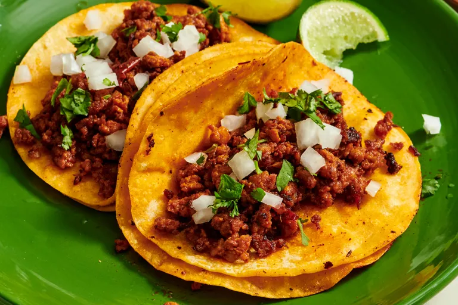

Home
Easy Chorizo Street Tacos

Description
- Features chorizo cooked with choptle peppers for a bold smoky taste.
- Chorizo grease creates layers of flavor.
Ingredients
- 1 Chorizo sausage link, casing removed and meat crumbled
- 2 Tablespoons chipotle peppers in adobo sauce
- 4 corn tortillas
- 2 tablespoons chopped onion, or to taste
- 2 tablespoons chopped fresh cilantro, or to taste (optional)
Directions
- Combine crumbed chorizo and chipotle peppers in adobo sauce in a bowl.
- Heat skillet over medium-high heat; add chorizo mixture and cook until
crisp, 5 to 7 minutes. Transfer to a place, reserving grease in skillet
- Heat tortillas in reserved grease in skillet over medium heat until warmed,
1 to 2 minutes per side. Stack 2 tortillas for each taco, then fill with chorizo,
onion, and cilantro.
Link to recipe on All Recipes